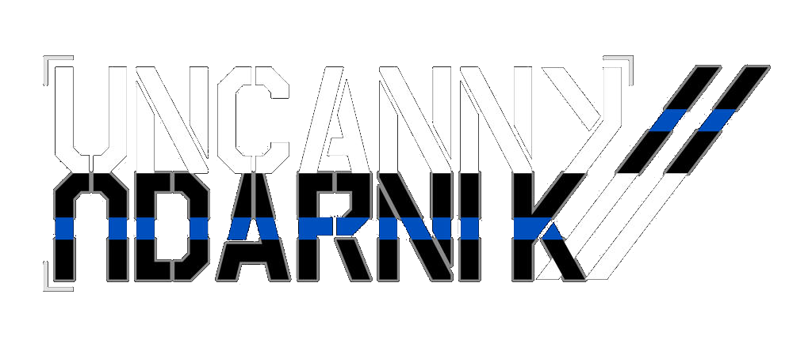

UNCANNY UDARNIK DATABASE

UDARNIK DATABASE RESOURCES
the Uncanny Udarnik Database is the main storage for information regarding the international megacorporation Uncanny Udarnik and its subsidiaries, sections, and background
view the main pages below or use the search bar to look at the entire database
ORGANISATIONS

Uncanny Udarnik
the international megacorporation
Uncanny Orbital Kometa
a subsidary company for orbital solutions to assault
Cannycat Heavy Industries
a subsidary created for industrial needs

Canny Coal Collectors
a subsidary created for mining and researching the anomolous HCC coal
Main Pages
Hydro-Catalysed Carbon (coal)
→
the foundational resource collected by uncanny udarnik
Structure
→
structure of uncanny udarnik
Research Directives
→
Active R&D directives, experimental lab procedures, and tech blueprints.
maybe world map
→
a map of uncanny udarnik
Terminal Status
System State
Nominal — Active Monitoring
Catalog Index
v2.5.0 Steel Blue CRT